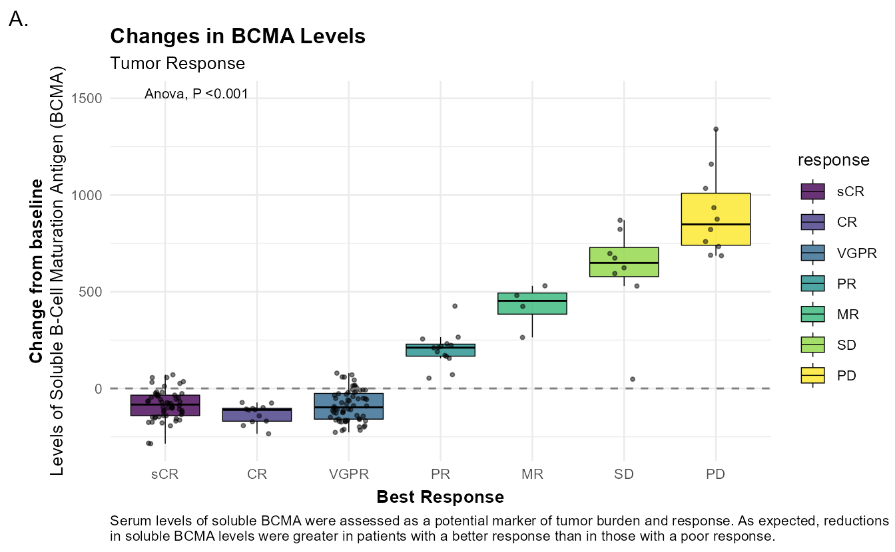
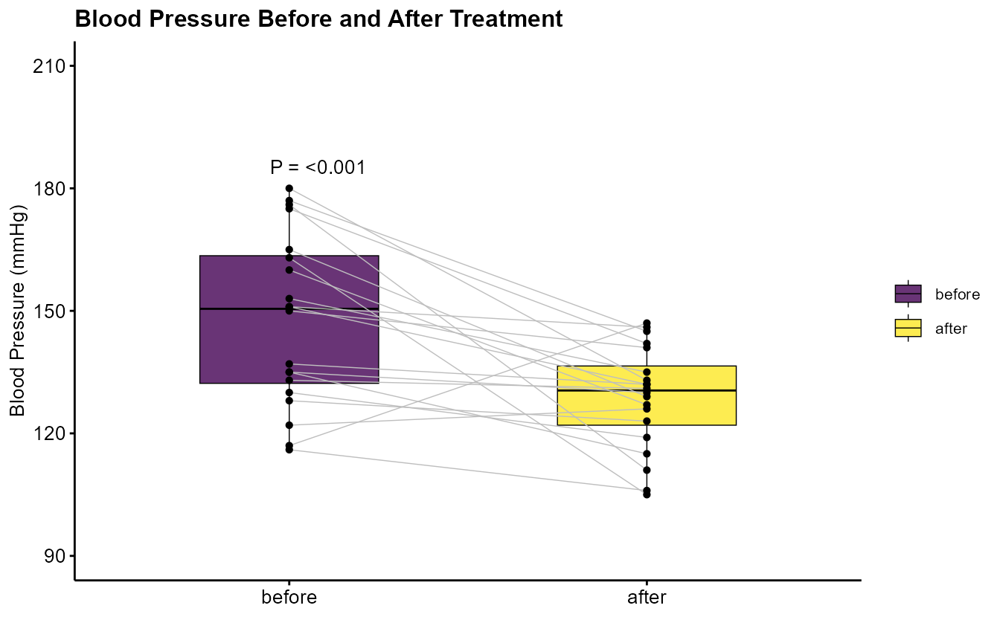

library(tidyverse)
library(ggpubr)3 原来箱线图也可以很高级 | 带抖动散点的箱线图和配对箱线图
同样是多组比较，为什么期刊更偏爱箱线图，而非柱状图？
柱状图本质上只展示单一统计量：均值（或均值 ± 标准误），而我们关心的一些问题，例如数据是否偏态、有无异常值、组内个体变异程度如何，恰恰是柱状图无法回答的。箱线图借助中位数、四分位距与须线，可以直观地呈现出这些分布特征。
3.1 关于箱线图的几个概念
在箱线图中：
下四分位线（Q1, 25%）、中位数线（Q2, 50%）和上四分位线（Q3, 75%）共同构成箱体；四分位距（IQR）是上、下四分位线之间的距离，即IQR = Q3 - Q1；
须线的上、下限分别是± 1.5 × IQR。需要注意的是，须线的末端是不超过上、下限的最远真实数据点。超出上、下限的点为离群值，但离群值不一定的错误的数据，需要结合专业知识判断。
3.2 为什么要用ggpubr来绘制箱线图？
简言之，ggpubr 是为学术出版而生的，用最少的代码生成符合期刊规范的图形，箱线图、抖动散点、统计标注、期刊配色一步到位。同时，由于它是基于 ggplot2构建的，因此可随时叠加 ggplot2 图层灵活调整细节。
3.3 箱线图实例
本文的两个实例将用到以下packages：
3.3.1 带抖动点散点的箱线图
为了便于演示，我们先模拟一份数据：骨髓瘤中缓解率与BCMA水平变化的关系。
set.seed(2026)
class <- c("sCR", "CR", "VGPR", "PR", "MR", "SD", "PD")
n <- c(54, 12, 64, 14, 4, 8, 10)
mean_change <- c(-82, -87, -90, 175, 381, 522, 937)
sd_change <- c(80, 85, 70, 95, 129, 304, 287)
df <- tibble(
response = rep(class, n),
change = pmap(list(n, mean_change, sd_change), rnorm) |> unlist()
) |>
mutate(
response = factor(response, levels = c("sCR", "CR", "VGPR", "PR", "MR", "SD", "PD")),
change = round(change, digits = 1)
)
cap <- str_wrap(
"Serum levels of soluble BCMA were assessed as a potential marker of tumor burden and response. As expected, reductions in soluble BCMA levels were greater in patients with a better response than in those with a poor response.",
width = 120,
indent = 0,
exdent = 0
)以上代码生成的模拟数据如Table 3.1所示：
| response | change |
|---|---|
| sCR | -40.4 |
| sCR | -168.4 |
| sCR | -70.9 |
| sCR | -88.8 |
| sCR | -135.3 |
| sCR | -283.3 |
| sCR | -140.8 |
| sCR | -163.6 |
| sCR | -72.9 |
| sCR | -119.9 |
接下来正式绘图，最终生成的带抖动散点的箱线图如Figure 3.1所示。
p <- df |> ggboxplot(
x = "response",
y = "change",
fill = "response",
width = 0.75,
linewidth = 0.25,
add = "jitter",
add.params = list(width = 0.15, size = 0.8, alpha = 0.5, color = "black"),
palette = ""
) +
stat_compare_means(
aes(label = str_c("Anova, P ", format.pval(after_stat(p), digits = 3, eps = 0.001))), #也可以在aes()外设置label = "p.signif"/"p.format"
method = "anova",
label.y = 1500,
size = 8*0.35
) +
geom_hline(yintercept = 0, linetype = "dashed", color = "grey50", linewidth = 0.5) +
scale_fill_viridis_d(alpha = 0.8, option = "viridis") +
labs(
title = "Changes in BCMA Levels",
subtitle = "Tumor Response",
x = "Best Response",
y = "**Change from baseline**<br>Levels of Soluble B-Cell Maturation Antigen (BCMA)",
caption = cap,
tag = "A."
) +
theme_minimal(base_size = 10) +
theme(
plot.title = element_text(face = "bold"),
plot.caption = element_text(hjust = 0),
axis.title.y = ggtext::element_markdown(lineheight = 1.2),
axis.title.x = element_text(face = "bold", margin = margin(t = 5))
)
print(p)
3.3.2 配对箱线图
同样，我们先构造一份模拟数据：20 名高血压患者治疗前后的血压对比。
patient_id <- 1:20
before <- rnorm(20, 150, 20)
after <- rnorm(20, 135, 15)
df <- tibble(
id = rep(patient_id, 2),
time = rep(c("before", "after"), each = 20),
bp = c(round(before, 0), round(after, 0))
)构造的模拟数据如下Table 3.2:
| id | time | bp |
|---|---|---|
| 1 | before | 116 |
| 2 | before | 175 |
| 3 | before | 117 |
| 4 | before | 163 |
| 5 | before | 137 |
| 6 | before | 130 |
| 7 | before | 135 |
| 8 | before | 180 |
| 9 | before | 177 |
| 10 | before | 153 |
使用ggpaired()函数绘制配对箱线图，可视化结果如Figure 3.2所示。
p <- df |>
ggpaired(
x = "time",
y = "bp",
id = "id",
color = "black",
fill = "time",
palette = NULL,
line.color = "grey",
line.size = 0.25
) +
stat_compare_means(
aes(label = str_c("P = ", format.pval(after_stat(p), digits = 3, eps = 0.001))),
method = "wilcox.test",
paired = TRUE,
vjust = -1
) +
scale_fill_viridis_d(name = NULL, alpha = 0.8, option = "viridis") +
labs(
title = "Blood Pressure Before and After Treatment",
y = "Blood Pressure (mmHg)"
) +
coord_cartesian(ylim = c(90, 210)) +
theme_pubr(base_size = 10) +
theme(
axis.title.x = element_blank(),
legend.position = "right",
plot.title = element_text(face = "bold")
)
p$layers[[1]]$aes_params$linewidth <- 0.25
print(p)